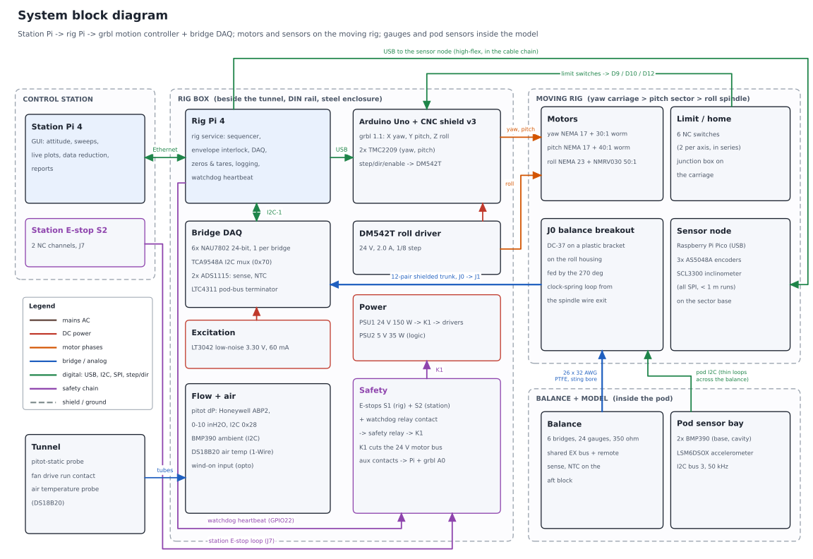
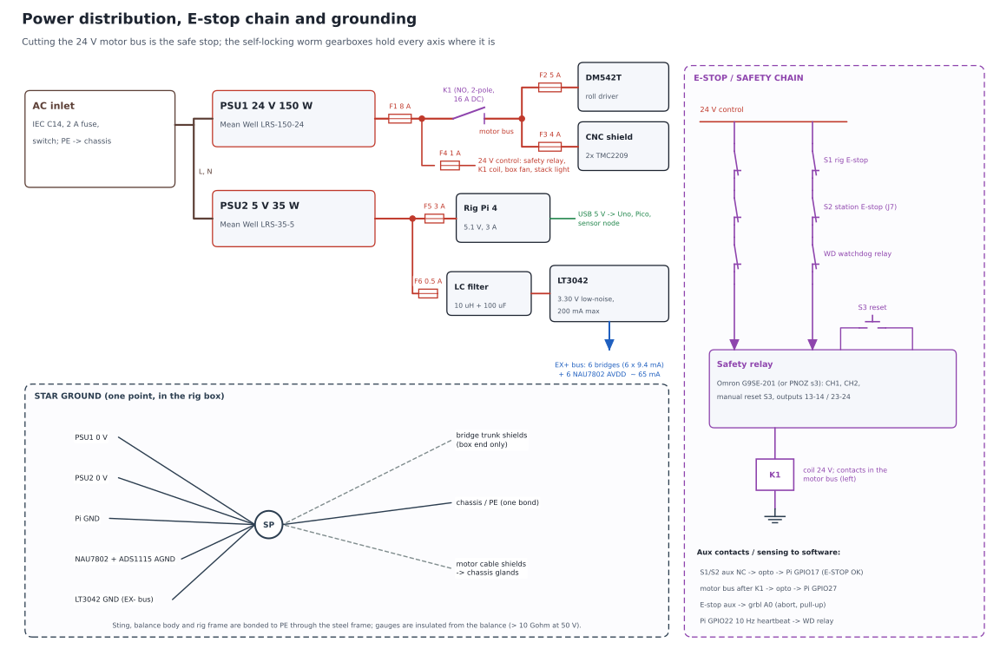
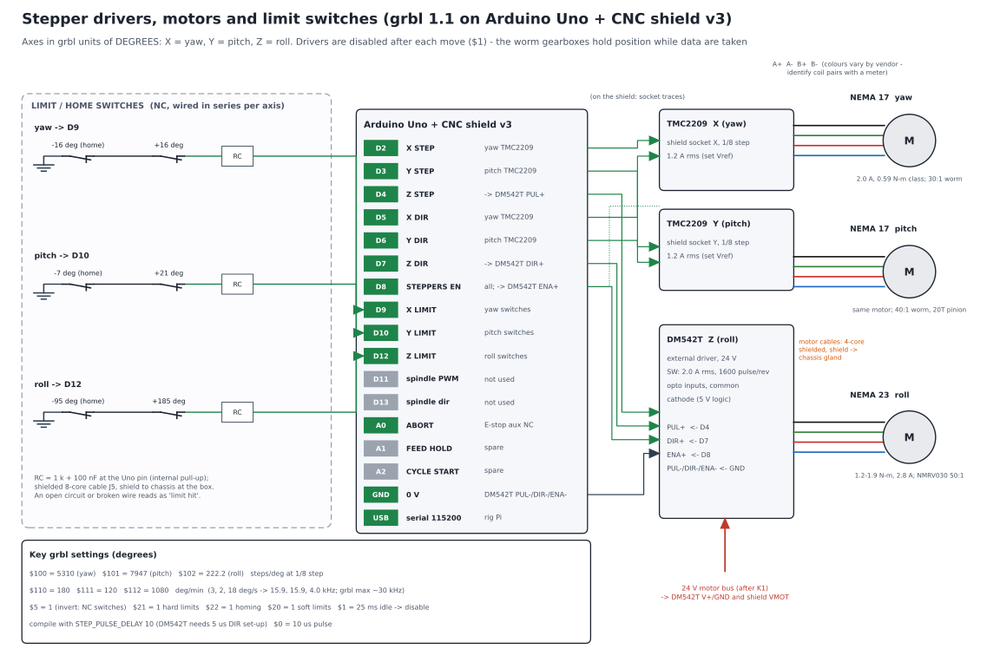
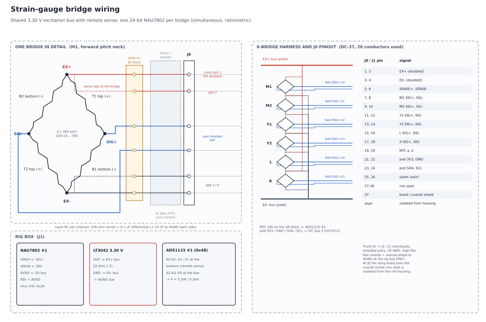
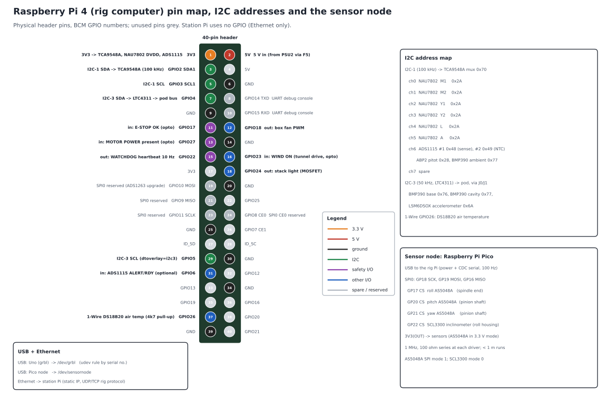
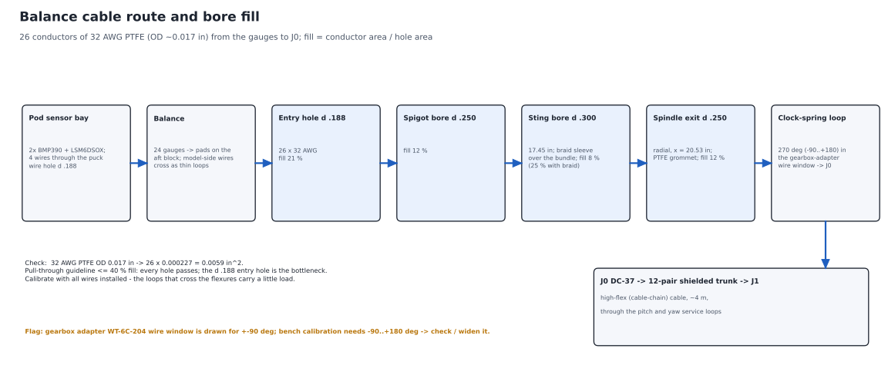

Electronics, control and data reduction
Two Raspberry Pi 4s - a control station and a rig computer - an Arduino Uno running grbl for the three stepper axes, one 24-bit ADC per balance bridge, and a hard-wired E-stop that removes motor power. This page is the wiring-level design: block diagram, power and safety chain, pin assignments, harness, connectors, cable schedule, power budget, parts list and bring-up checklist.
Architecture

Diagrams are also available as PNG: block, power_safety, steppers, bridge, pinmap, harness_route; generator make_electronics_diagrams.py.


Key decisions
| Topic | Decision | Why |
|---|---|---|
| Bridge ADC | 6x NAU7802 (SparkFun Qwiic Scale), one per bridge, behind a TCA9548A mux; 80 SPS, gain 128 | All six channels convert at the same time (no multiplexer settling or channel-to-channel crosstalk); 24-bit with PGA; ratiometric; plug-in boards and a Python library; ~$15 each. Speed is not needed - every point is a steady average. Upgrade path: 2x ADS1263 on SPI0 (pins reserved). |
| Excitation | One shared 3.30 V bus from an LT3042 low-noise LDO, feeding all 6 bridges AND all 6 NAU7802 AVDD pins (internal LDO off, AVDDS = 0) | The NAU7802's own LDO is not meant to drive 350 Ω bridges (9.4 mA each). Feeding AVDD from the same bus keeps every conversion ratiometric to the excitation. 3.3 V gives ~3.2 mV full scale at ~1 mV/V and 7.8 mW per gauge. |
| Remote sense | EX+/EX- doubled in the balance cable; SENSE+/SENSE- taken at the bridge pads and read by an ADS1115 | Lead resistance (~1 Ω loop) costs ~0.3-1.8 % sensitivity; the ratio k = Vbalance / Vbox is logged and applied, so lead temperature cannot drift the calibration. |
| Roll driver | DM542T external driver, 24 V, 2.0 A rms, 1/8 step, common-cathode opto inputs from the shield's Z pins | A NEMA 23 (2.8 A class) is beyond a stepstick; the DM542T is cheap, opto-isolated and 5 V-logic compatible. |
| Pitch / yaw drivers | TMC2209 stepsticks in the CNC shield X and Y sockets, standalone STEP/DIR, 1/8 step, 1.2 A rms (Vref per module datasheet), heatsinks + box fan | Quiet, cool at 1.2 A, enough torque margin through the worms; no UART needed. |
| Motion firmware | grbl 1.1 on the Uno; axes in degrees: X yaw, Y pitch, Z roll. $1 idle delay disables the drivers after every move | Proven step generation, homing, hard and soft limits. Drivers off while measuring = no PWM noise near the gauges; the worm gearboxes self-lock. |
| Axis sensing | Sensor node: Raspberry Pi Pico on the pitch-sector base reads 3x AS5048A + the SCL3300 over short SPI and reports over USB | SPI does not survive a 3-4 m run through cable chains; one USB cable does. Encoders verify every move; homing resolves the pinion turn count (pitch and yaw pinions turn ~3.3 times over the range). |
| Pod sensors | I2C bus 3 (50 kHz) through the balance cable, LTC4311 active terminator in the rig box | Only 4 thin wires cross the balance; no tubing in the load path. Read between bridge averages to keep digital edges away from the µV signals. |
| Power | 24 V 150 W motor PSU, separate 5 V 35 W logic PSU; star ground in the rig box | Peak motor demand ~2.9 A (2.3x margin); logic ~1.9 A (3.6x margin). Separate supplies keep motor return currents out of the analog ground. |
| Safe stop | Two-channel E-stops (rig + station) and a Pi watchdog contact in series into a safety relay; its outputs drive K1, which opens the 24 V motor bus | Removing power is the stop; the self-locking worms hold every axis. Aux contacts tell the Pi and grbl (A0) what happened. |
Power distribution and E-stop chain

- Fuses: F1 8 A (24 V main), F2 5 A (DM542T), F3 4 A (CNC shield VMOT), F4 1 A (24 V control), F5 3 A (rig Pi), F6 0.5 A (excitation supply).
- K1 is a 2-pole relay with DC-rated 16 A contacts; it opens both + and - of the motor bus. The drivers' logic stays powered so grbl and the Pi keep reporting.
- Watchdog: the rig service toggles GPIO22 at 10 Hz; if it stops (crash, lost station link, software fault) the watchdog relay opens the safety loop within ~0.3 s.
- Reset is manual (S3) after every trip; after reset, the rig service re-homes or checks the encoders before allowing motion.
- Grounding: one star point (SP) in the rig box. Bridge pair shields and the trunk overall shield go to analog ground at the box end ONLY. Motor cable shields go to chassis at the glands. Chassis is bonded to mains PE once.
- This is a student-lab (category B) design, not a certified safety function. Mechanical hard stops back up the limit switches on every axis.
Motion wiring (grbl on Arduino Uno + CNC shield v3)

| Axis (grbl) | Gear chain | Steps per degree | Max speed (deg/min) | Motor rpm | Step rate (kHz) | Range |
|---|---|---|---|---|---|---|
| Yaw (X) | 30:1 worm x 39.8 (20T pinion on R 19.6 in rack) | 5,310.3 | 3° /s = 180 | 597 | 15.9 | ±15° (switches ±16°) |
| Pitch (Y) | 40:1 worm x 44.7 (20T pinion on R 22 in rack) | 7,947.4 | 2° /s = 120 | 596 | 15.9 | -6..+20° (switches -7 / +21°) |
| Roll (Z) | 50:1 worm (direct) | 222.2 | 18° /s = 1,080 | 150 | 4.0 | ±90° flight, -90..+180° calibration (switches -95 / +185°) |
- Limit / home switches: roller-lever NC switches, two per axis in series to one grbl input (D9 yaw, D10 pitch, D12 roll; grbl 1.1 moves Z-limit to D12 when variable spindle is enabled). A broken wire reads as "limit hit". Each axis homes to its negative switch.
- grbl settings: $100/$101/$102 from the table; $110/$111/$112 = 180/120/1080 deg/min; $5 = 1 (NC switches); $20 = 1, $21 = 1, $22 = 1; $1 = 25 ms; $0 = 10 µs. Compile with STEP_PULSE_DELAY = 10 µs (the DM542T needs 5 µs DIR set-up).
- Soft limits in grbl use machine coordinates from home; set G54 offsets so work coordinates read true angles. The rig service checks every target against the envelope interlock (and the calibration-mode roll limit) before sending it.
- Pitch speed: the rack-and-pinion multiplies the worm ratio by 44.7, so 2°/s already needs ~600 motor rpm and 15.9 kHz steps. Do not raise pitch speed above ~2.5°/s at 1/8 step (grbl's ~30 kHz limit, NEMA 17 torque falls with speed).
Strain-gauge bridge wiring

- Each bridge has 4 active 350 Ω gauges; tandem gauges on the same face sit in opposite arms (see the balance page). Bridges are completed on the balance, so only full-bridge signals travel down the sting.
- Shared excitation leaves the rig box on trunk pair 1, splits into doubled 32 AWG conductors at J0 and is distributed on pads on the aft block. SENSE+/- are tapped at the pads.
- Each signal pair is twisted in the balance and sting, then has its own shielded pair in the trunk. Input filter at each NAU7802: 100 Ω in each line, 0.1 µF across, 10 nF to AGND on each side.
- Resolution: full scale is ~3.2 mV at 3.3 V excitation. The NAU7802 at 80 SPS and gain 128 has noise of order 0.1 µV rms per sample; averaging 160 samples (2 s) brings it far below the 0.3 % FS (~10 µV) target. Drift and zero shifts, not ADC noise, set the accuracy.
- Gauge insulation must be > 10 GΩ to the balance body at 50 V before the cable is attached; check again after the sting is assembled.
Raspberry Pi pin map and I2C addresses

Balance cable route and bore fill

| Hole | Diameter (in) | Fill with 26 x 32 AWG (0.017 in OD) |
|---|---|---|
| Balance entry hole (aft block, vertical) | Ø0.188 | 21 % |
| Balance spigot wire bore | Ø0.250 | 12 % |
| Sting wire bore (17.45 in) | Ø0.300 | 8 % |
| Spindle radial wire exit (x = 20.53 in) | Ø0.250 | 12 % |
Bundle area 0.0059 in²; all holes are below a 40 % pull-through guideline. The vertical Ø0.188 entry hole in the aft block is the bottleneck. Conductors: EX+ x2, EX- x2, SENSE+/-, 12 bridge signals, NTC x2, pod 3V3/GND/SDA/SCL, 2 spares = 26. Calibrate with all wires installed: the thin loops that cross the flexures carry a little load.
Rig box connectors and pinouts
| Ref | Connector | Function | Pinout |
|---|---|---|---|
| J0 | DC-37 male on a plastic bracket, roll housing | balance breakout (rotating side ends here) | see the bridge diagram; pin 37 = braid/shield; shell isolated from the housing |
| J1 | DC-37 female, rig box panel | balance trunk | same pin numbers as J0 |
| J2 | GX20-4 | roll motor (NEMA 23) | 1 A+, 2 A-, 3 B+, 4 B-; shield to the gland |
| J3 | GX16-4 | pitch motor | 1 A+, 2 A-, 3 B+, 4 B- |
| J4 | GX16-4 (blue band) | yaw motor | 1 A+, 2 A-, 3 B+, 4 B- |
| J5 | GX16-8 | limit / home switches | 1-2 yaw loop, 3-4 pitch loop, 5-6 roll loop, 7 0 V, 8 shield |
| J6 | USB-B panel feed-through | sensor node (Pico) | USB 2.0 |
| J7 | GX16-4 | station E-stop | 1-2 channel 1 (NC), 3-4 channel 2 (NC) |
| J8 | RJ45 panel feed-through | Ethernet to the station Pi | - |
| J9 | 2x 1/8 in barbed bulkheads | pitot total / static -> ABP2 | tubing |
| J10 | GX12-3 | air temperature DS18B20 | 1 3V3, 2 data, 3 GND |
| J11 | GX12-2 | tunnel drive run contact (wind on) | dry contact -> opto -> GPIO23 |
| AC | IEC C14 with fuse and switch | mains in | L, N, PE (PE to chassis stud) |
Cable schedule
| Cable | Type | From -> to | Length | Notes |
|---|---|---|---|---|
| W1 | 26 x 32 AWG PTFE, twisted pairs, braid sleeve | balance pads -> sting bore -> spindle exit -> J0 | ~1.0 m | 270° clock-spring loop at the spindle exit; PTFE grommet in the exit hole |
| W2 | 12-pair individually shielded, 24 AWG, high-flex | J0 -> pitch loop -> yaw chain -> J1 | ~4 m | pair 1 EX+/EX-, 2 SENSE, 3-8 bridge signals, 9 NTC, 10 pod 3V3/GND, 11 pod SDA/SCL, 12 spare |
| W3 | 4 x 0.75 mm², shielded, high-flex | roll motor -> J2 | ~4 m | separate from W2 by ≥ 100 mm where possible; cross at 90° |
| W4 | 4 x 0.5 mm², shielded, high-flex | pitch motor -> J3 | ~4 m | |
| W5 | 4 x 0.5 mm², shielded, high-flex | yaw motor -> J4 | ~3.5 m | |
| W6 | 8 x 0.25 mm², shielded | carriage junction box -> J5 | ~4 m | short 2-core leads from each switch to the junction box |
| W7 | USB 2.0 A-B, high-flex | sensor node -> J6 | ~4 m | in the cable chain with W2 |
| W8 | 4-pair 26 AWG shielded | sensor node -> 3 encoders + inclinometer | ≤ 1 m each | SCK, MOSI, MISO, CS + 3V3/GND; 100 Ω series at drivers |
| W9 | 4 x 0.5 mm², shielded | station E-stop -> J7 | ~6 m | |
| W10 | Cat6 S/FTP | station Pi -> J8 | ~6 m | |
| W11 | 2x silicone tube 1/8 in ID | pitot-static probe -> J9 | ~3 m | equal lengths, no kinks |
| W12 | 3-core | DS18B20 probe -> J10 | ~3 m | |
| W13 | 2-core | tunnel drive aux contact -> J11 | ~5 m |
Power budget
| 24 V loads (PSU1, 6.5 A) | Peak A |
|---|---|
| DM542T + NEMA 23 (2.0 A phase, 150 rpm) | 1.50 |
| TMC2209 + NEMA 17, yaw (1.2 A rms) | 0.50 |
| TMC2209 + NEMA 17, pitch (1.2 A rms) | 0.50 |
| Safety relay + K1 coil | 0.15 |
| Box fan + stack light | 0.20 |
| Total | 2.85 |
| 5 V loads (PSU2, 7 A) | Peak A |
|---|---|
| Rig Pi 4 (busy, no USB power hogs) | 1.60 |
| Uno + CNC shield logic (USB) | 0.06 |
| Pico node + 3 AS5048A + SCL3300 (USB) | 0.08 |
| LT3042 -> 6 bridges + 6 NAU7802 AVDD | 0.07 |
| NAU7802 DVDD, mux, 2 ADS1115, ABP2, BMP390 x3, LSM6DSOX | 0.03 |
| Opto inputs, watchdog relay coil | 0.09 |
| Total | 1.93 |
Only one axis normally moves at a time, so the real 24 V peak is lower. The excitation bus draws ~65 mA from the LT3042 (rated 200 mA).
Parts list (electronics)
| Group | Item | Qty | Each (USD) | Total (USD) |
|---|---|---|---|---|
| Compute / motion | Raspberry Pi 4 Model B, 4 GB (station + rig) | 2 | 55 | 110 |
| Compute / motion | microSD 32 GB, Pi cases with heatsinks | 2 | 15 | 30 |
| Compute / motion | Arduino Uno R3 (genuine) | 1 | 27 | 27 |
| Compute / motion | CNC shield v3 | 1 | 8 | 8 |
| Compute / motion | TMC2209 stepstick (1 spare) | 3 | 8 | 24 |
| Compute / motion | DM542T stepper driver (roll) | 1 | 35 | 35 |
| Compute / motion | Raspberry Pi Pico + small enclosure (sensor node) | 1 | 12 | 12 |
| DAQ / sensors | SparkFun Qwiic Scale NAU7802 (1 spare) | 7 | 15 | 105 |
| DAQ / sensors | TCA9548A I2C multiplexer | 1 | 7 | 7 |
| DAQ / sensors | ADS1115 16-bit ADC breakout | 2 | 15 | 30 |
| DAQ / sensors | LT3042 low-noise LDO module (excitation) | 1 | 15 | 15 |
| DAQ / sensors | LTC4311 I2C active terminator (pod bus) | 1 | 8 | 8 |
| DAQ / sensors | AS5048A encoder board + diametric magnet | 3 | 15 | 45 |
| DAQ / sensors | SCL3300 inclinometer breakout | 1 | 45 | 45 |
| DAQ / sensors | Honeywell ABP2 0-10 inH2O differential, I2C | 1 | 55 | 55 |
| DAQ / sensors | Pitot-static probe + silicone tubing | 1 | 45 | 45 |
| DAQ / sensors | BMP390 barometer (2 pod, 1 ambient) | 3 | 11 | 33 |
| DAQ / sensors | LSM6DSOX accelerometer (pod) | 1 | 12 | 12 |
| DAQ / sensors | DS18B20 probe (air) + 10k NTC (balance) | 1 | 11 | 11 |
| Power / safety | Mean Well LRS-150-24 (24 V, 6.5 A) | 1 | 30 | 30 |
| Power / safety | Mean Well LRS-35-5 (5 V, 7 A) | 1 | 15 | 15 |
| Power / safety | IEC inlet with fuse + switch, DIN fuse holders, fuses, terminal blocks | 1 | 45 | 45 |
| Power / safety | E-stop, 2 NC channels, with enclosure (rig + station) | 2 | 30 | 60 |
| Power / safety | Safety relay, Omron G9SE-201 class, manual reset | 1 | 130 | 130 |
| Power / safety | K1 relay 2-pole 16 A, 24 VDC coil (Finder 62.82 class) + socket | 1 | 35 | 35 |
| Power / safety | Retriggerable watchdog relay module | 1 | 12 | 12 |
| Power / safety | 4-ch optocoupler input board | 1 | 8 | 8 |
| Power / safety | Roller-lever limit switches (NC) + carriage junction box | 6 | 7 | 42 |
| Cables / connectors | 32 AWG PTFE hook-up wire, 10 colours x 10 m | 1 | 60 | 60 |
| Cables / connectors | Expandable braid sleeve 1/8 in, PTFE grommets | 1 | 12 | 12 |
| Cables / connectors | DC-37 connector pair + backshells (J0, J1) + plastic bracket | 1 | 30 | 30 |
| Cables / connectors | 12-pair individually shielded high-flex cable, 5 m | 1 | 90 | 90 |
| Cables / connectors | Motor cable 4-core shielded high-flex, 12 m | 1 | 45 | 45 |
| Cables / connectors | 8-core and 4-core shielded cable (switches, station E-stop) | 1 | 35 | 35 |
| Cables / connectors | GX16 / GX20 / GX12 panel connectors | 1 | 30 | 30 |
| Cables / connectors | Cable chain for the yaw and pitch loops | 1 | 40 | 40 |
| Cables / connectors | Panel USB-B / RJ45, high-flex USB 5 m, Cat6 6 m | 1 | 35 | 35 |
| Enclosure / misc | Steel enclosure ~16 x 12 x 6 in, DIN rail, glands, filtered fan | 1 | 120 | 120 |
| Enclosure / misc | Ferrites, heat-shrink, standoffs, labels | 1 | 40 | 40 |
| Total (excluding motors and gearboxes, which are in the motion budget) | ~1,570 |
Prices are approximate 2026 hobby/industrial-supplier prices. A cheaper safety relay or a force-guided relay module can cut ~$100, but keep two channels and manual reset.
Sensors
| Quantity | Sensor | Location | Interface |
|---|---|---|---|
| 6 balance bridges | 6x NAU7802, 24-bit, 80 SPS, gain 128 | rig box | I2C-1 via TCA9548A ch0-5 |
| Excitation at the balance | ADS1115 #1 (remote sense) | rig box | I2C-1 ch6, 0x48 |
| Balance temperature | 10k NTC on the aft block + ADS1115 #2 | balance / rig box | I2C-1 ch6, 0x49 |
| Roll angle | AS5048A 14-bit absolute encoder | spindle end | SPI on the sensor node |
| Pitch, yaw angle | AS5048A on the pinion shafts (+ homing for turn count) | drive brackets | SPI on the sensor node |
| Sting attitude | SCL3300 dual-axis inclinometer | roll housing | SPI on the sensor node |
| Model attitude | LSM6DSOX accelerometer | pod sensor bay | I2C-3, 0x6A |
| Base / cavity pressure | 2x BMP390 | pod sensor bay | I2C-3, 0x76 / 0x77 |
| Dynamic pressure | pitot-static probe + ABP2 0-10 inH₂O differential (100 mph = 4.9 inH₂O) | upstream / rig box | I2C-1 ch6, 0x28 |
| Ambient pressure, air temperature | BMP390 + DS18B20 | rig box / flow | I2C-1 ch6 0x77; 1-Wire GPIO26 |
| Wind on | tunnel drive run contact | tunnel drive | opto -> GPIO23 |
Software services and measurement sequence
- Rig service (rig Pi, Python): grbl link, sensor-node link, DAQ, envelope interlock, sequencer, zeros and tares, logging (one HDF5/CSV file per run), watchdog heartbeat.
- Station GUI (station Pi): attitude entry and sweeps, live plots, run log, data reduction and reports. Talks to the rig service over Ethernet; every command is checked by the rig service, not the GUI.
- Check the target attitude against the envelope interlock (model size, wall clearance; calibration mode allows roll -90..+180°).
- Read E-stop and motor-power inputs; send the move to grbl; wait for Idle.
- Verify with the encoders and inclinometer (stop and re-home if the error exceeds 0.1°).
- Drivers disable after $1 = 25 ms; the worm gearboxes hold position.
- Settle ~1 s, then average the six bridges, sense voltage, NTC, pressures and attitude for 2 s (160 samples at 80 SPS). Read the pod bus between averages.
- Next point. Wind-off zeros at the start and end of each run and weight tares at every attitude.
Data reduction pipeline
- Correct each bridge reading by the remote-sense ratio k; subtract the wind-off zero and the weight tare at the same attitude.
- Invert the calibration (Newton iteration on the fitted model) -> N, A, m, Y, n, l at the BMC.
- Base-pressure correction of the axial force.
- Transform body axes -> wind axes with the measured α, β, φ; normalise by q and the reference area and length.
- Wind-tunnel wall corrections (blockage, streamline curvature) per Barlow, Rae & Pope.
Safety summary
- Hard-wired two-channel E-stops (rig + station) and the Pi watchdog open the safety relay; K1 removes 24 V motor power. Manual reset.
- NC limit switches at both ends of every axis (grbl hard limits), mechanical hard stops behind them, homing at power-up.
- Software envelope interlock per model size; calibration-mode roll limit only with the calibration sleeve fitted.
- Optional rule: no motion with the wind on (GPIO23), until the team decides otherwise.
- Motors, drivers and the rig box stay outside the airflow; cable loops are tied so they cannot reach the model or the fan.
Bring-up and test checklist
- Rig box powered from a current-limited bench supply first: check every rail, fuse and the star-ground continuity (SP to chassis < 0.1 Ω; analog ground not tied to chassis anywhere else).
- E-stop chain: each of S1, S2 and the watchdog must drop K1 and be reported on GPIO17/GPIO27; K1 must not re-close without S3.
- grbl: flash with STEP_PULSE_DELAY; enter the $ settings; with the motors disconnected, check step rates on a scope (≤ 16 kHz at max speed).
- Motors on the bench: set TMC2209 Vref and DM542T switches, jog each axis, check direction and steps per degree against a protractor / the encoders.
- Limit switches: open each one by hand and confirm the alarm; then home every axis; then test hard limits at slow speed.
- Sensor node: read all three encoders and the inclinometer at 100 Hz; check the encoder against grbl position over the full range.
- Excitation: LT3042 output 3.30 V ± 1 %, noise < 10 µV rms; then connect the bridges and read SENSE at the balance.
- Gauges: bridge resistances (350 Ω ± 0.5 %, arms matched), insulation > 10 GΩ at 50 V, zero offsets < 1 mV/V.
- DAQ noise with motors disabled: each bridge < 0.05 % FS rms over 2 s averages; repeat with drivers enabled, with the pod bus running and with the tunnel fan on - find and fix any difference.
- Warm-up drift: zero drift over 1 h with constant temperature < 0.05 % FS; log the NTC.
- Dead-weight sanity check on the bench (1 lb on the calibration sleeve) before the full calibration.
- Watchdog: kill the rig service and pull the Ethernet cable - both must stop motion.
Open items and flags
- Gearbox adapter wire window (drawing WT-6C-204) is drawn for ±90° of roll; bench calibration needs -90..+180°. Check, and widen it if the cable bundle cannot sweep 270°.
- Pitch motor speed: the rack-and-pinion adds x44.7 to the 40:1 worm, so 2°/s already needs ~600 motor rpm (
motion_system_sizing.py, corrected 2026-10-03: 64 mN·m at 596 rpm). Keep pitch ≤ 2-2.5°/s and check the NEMA 17 torque curve at 600 rpm. - Confirm the gauge supplier's maximum bridge excitation for the narrow grids (3.3 V planned; the NAU7802 needs AVDD ≥ 2.7 V).
- Choose the cable-chain routes for the yaw and pitch loops when the bay floor is measured.
- Decide whether motion is allowed with the wind on.
- Deferred (2026-10-03): custom strain-gauge readout PCB. First build is from modules. Later, a KiCad board (6x NAU7802 + TCA9548A, LT3042 excitation, ADS1115 sense, input RC filters, DC-37 balance connector, solid ground plane / single star point, one cable or a HAT to the Pi), fabricated and assembled at JLCPCB (~$60-150). Optional later boards: a round pod sensor board (2x BMP390 + LSM6DSOX) if the breakouts do not fit the pod bay, and a rig-box interface board (optos, watchdog, switch terminals). Not started - on hold until requested.